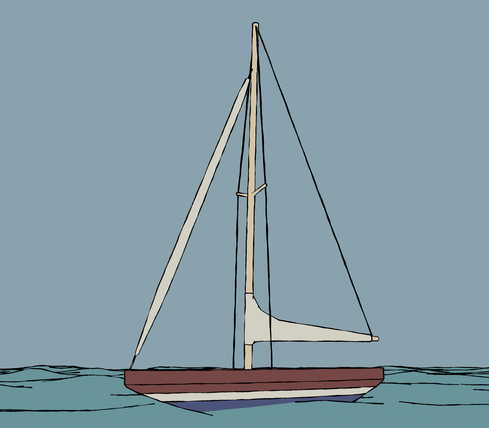

-
See more...
Engineering
Engineering design projects, some academic and some personal.
-

See more...
Art
A collection of art projects I've worked on over the years, both digital and physical media.
-
See more...
Writing
Writing excerpts, including technical, persuasive, and creative passages.
-
See more...
Other Projects
From woodworking to home organization, these projects showcase creative solutions to a range of design challenges.